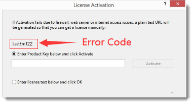

FAQ-1090 Warum sehe ich LastErr:1, LastErr:122 oder LastErr:401, wenn ich Origin aktiviere?
Licensing-Error-Codes
Letztes Update: 10.10.2023
Wenn Sie den Fehlercode LastErr:1, LastErr:122 oder LastErr:401 erhalten, wenn Sie Origin aktivieren,
- 
Um dieses Problem zu beheben:
- Bitte prüfen Sie als Erstes, ob Origins Programmordner und Anwenderdateiordner (Sie können sie über das Menü Hilfe: Ordner öffnen) auf die Cloud (OneDrive, Dropbox, Google Drive etc.) festgelegt sind. Falls das so sein sollte, dann stellen Sie sie bitte auf lokal um.
Hinweis: Auf dieser Seite finden Sie Anweisungen zum Ändern des Anwenderdateiordners. - Wenn die zwei obigen Ordner lokal sind, versuchen Sie bitte die folgende Lösung:
- Schließen Sie Origin, wenn es ausgeführt wird.
- Öffnen Sie den Windows-Browser beim Ordner:
C:\ProgramData\OriginLab.
- Löschen Sie den Unterordner License und die Datei Regid.lic.
- Klicken Sie mit der rechten Maustaste auf das Origin-Symbol und wählen Sie Als Administrator ausführen im Kontextmenü, um Origin als Administrator zu starten.
- Der Dialog Lizenzaktivierung wird geöffnet. Geben Sie den Produktschlüssel ein und klicken Sie auf Aktivieren, um Ihr Origin zu lizenzieren.
Hinweis: Es besteht keine Notwendigkeit, Origin als Administrator auszuführen, nachdem Origin erfolgreich aktiviert wurde.
- Sollte die obenstehende Lösung nicht helfen, dann deinstallieren Sie Origin bitte und installieren Sie es erneut und aktivieren Sie es wieder.
Erfahren Sie mehr zum Lizenzfehlercode auf dieser Seite.
Schlüsselwörter:Lizenz, Fehlercode, LastErr 1, LastErr 122, LE, Lernausgabe, Lernversion, 401